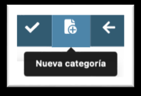
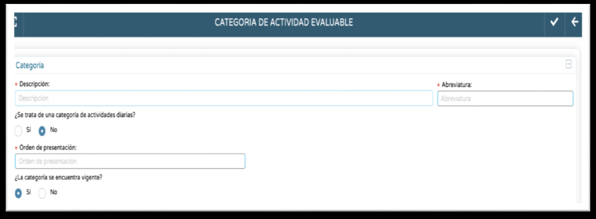

1. Categorías.
Tendremos en cuenta los siguientes aspectos:
a. Antes de configurar el Cuaderno es conveniente prever en nuestra práctica docente qué actividades serán las que nos aporten evidencias (trazabilidad) del grado de consecución de los referentes de evaluación reflejados en la normativa (Criterios de evaluación). Esas actividades en el Cuaderno se denominarán Actividades Evaluables. Una vez previstas, la siguiente decisión será determinar cómo clasificarlas en Categorías. Las Categorías no son más que la clasificación que hacemos de nuestras Actividades Evaluables.
b. Es posible que el Cuaderno nos ofrezca ya Categorías creadas por defecto (Ítems, Controles,…). Si no las vamos a usar pincharemos sobre ellas y elegiremos Borrar.
c. La creación de una Categoría nueva se hace en el botón disponible arriba a la derecha, Nueva Categoría. Para esta nueva Categoría definiremos:


- Descripción: el nombre.
- Abreviatura: con este nombre corto aparecerán en el Cuaderno.
- Diaria/no diaria. Decidiremos si la Categoría es de Actividades diarias o no diarias. La Actividad Evaluable que guardemos en una Categoría diaria será una Actividad diaria; la que guardemos en una Categoría no diaria será una Actividad no diaria. Ambas cosas tienen ventajas e inconvenientes: (Vídeo de apoyo)
- Las Actividades diarias se podrán calificar tantas veces como días incluye su planificación. Si planifico la Actividad con inicio el 14 de octubre y fin el 15, el Criterio/s evaluado/a en ella podré calificarlo dos veces, una el 14 y otra el 15, siendo dos calificaciones distintas para ese Criterio. Antes y después de esas fechas la Actividad no está disponible para calificarla. Además, si abrimos el Cuaderno otro día (ej. 16 de octubre), las calificaciones que introducimos el 14 y/o el 15 no aparecerán; para verlas y, en su caso, modificarlas, tendremos que irnos a la fecha correspondiente. No obstante, si estando en el Cuaderno pinchamos en un alumno/a se abrirá un menú en el cual una de las entradas es Actividades Diarias. En este menú veremos todas las calificaciones diarias que tiene el alumno/a en una determinada convocatoria, con la posibilidad además de editarlas.
- Una Actividad no diaria va a estar siempre disponible en el Cuaderno durante la convocatoria para la que se editó, tanto para calificarla como para ver su calificación o modificarla (si ya se calificó). Las fechas de planificación en la edición de la Actividad son irrelevantes. La Actividad no diaria solo puede calificarse una vez; si deseamos calificarla dos veces se tendrían que crear dos distintas. El que una Actividad sea no diaria es un requisito para conectar Moodle Centros con el Cuaderno (Vídeo de apoyo)
- Orden de presentación. Es el orden con el que las Actividades Evaluables de esta Categoría se presentarán en el Cuaderno. Se ha de asignar un número (1, 2, 3…). Las Actividades de la Categoría con el orden 1 serán las que ocupen las primeras columnas en el Cuaderno.
- Vigencia. Se asignará Sí si la Categoría se va a usar. Las Categorías que no se usen se pueden poner como No vigentes. Si la Categoría fuera el título de una situación de aprendizaje de un nivel educativo (ej. 4º ESO. Mejora tu condición física) lo lógico es ponerla no vigente en los cursos escolares en los que no imparta 4º ESO y, por tanto, no la voy a usar, y recuperar su vigencia el curso en que vuelva a impartir estas enseñanzas. En cualquier caso, no se puede borrar una Categoría que se está usando. El intentar borrarla en realidad la convierte en No vigente, con la posibilidad de recuperarla en el futuro.
SUGERENCIAS DE CONFIGURACIÓN
Las Categorías no son más que una clasificación de las Actividades Evaluables. Aunque este es un aspecto personal, quizás lo más razonable es clasificar las Actividades según las situaciones de aprendizaje donde se desarrollan. Según esto, lo mejor es crear las siguientes Categorías: Situación 1, Situación 2…. Si decidiéramos poner a la Categoría un nombre con el nivel educativo, área-materia-ámbito-módulo y/o título de la situación de aprendizaje (ej. 4ESO.EF.Mi entrenamiento) tendríamos que crear categorías diferenciadas por nivel y área-materia-ámbito-módulo, siendo una lista quizás demasiado larga y teniendo que modificarla si el curso próximo se imparten distintos niveles y/o áreas-materias-ámbitos-módulos.